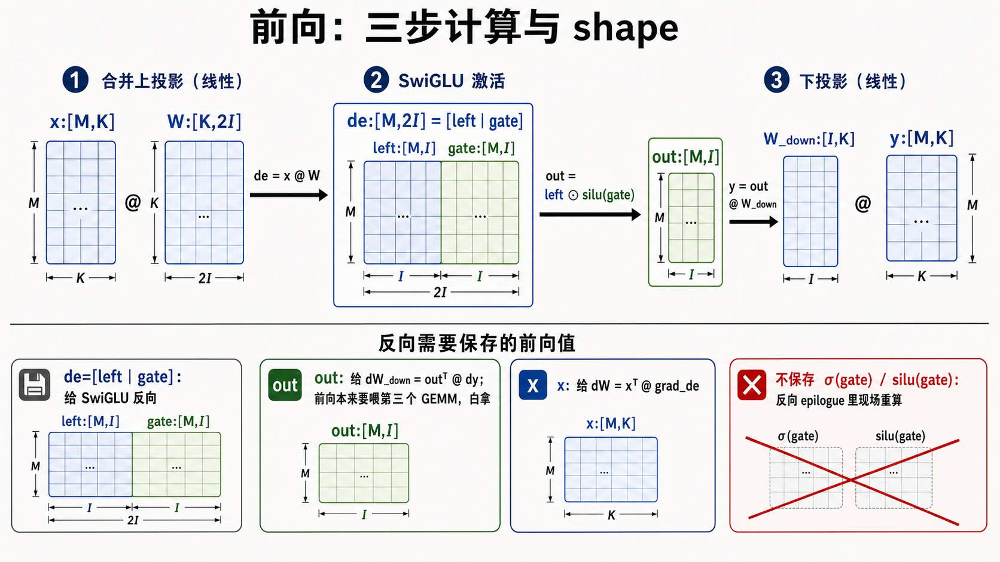
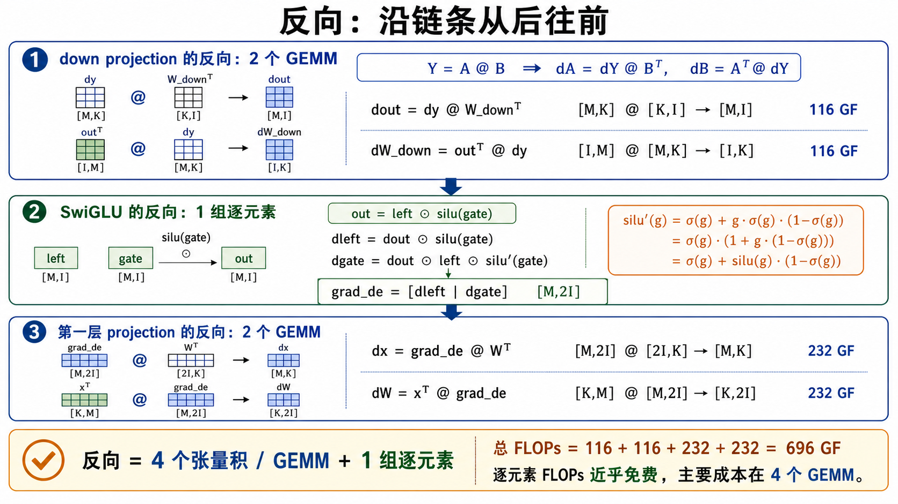
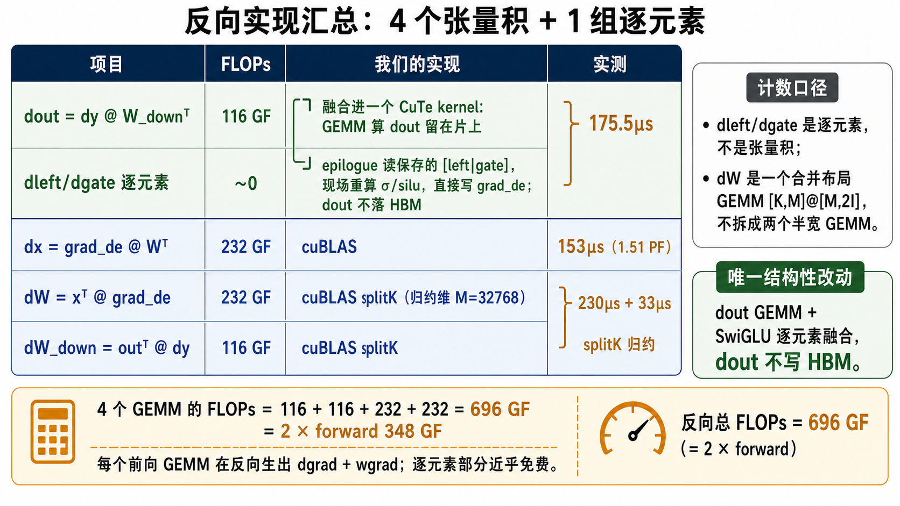
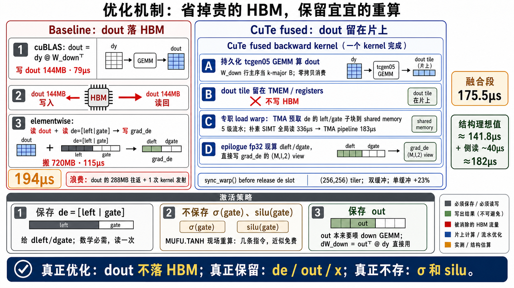

SwiGLU MLP 的前向原理、反向链条与优化思路
这份说明从前向公式开始，把 shape、反向矩阵微分、实现账本和真正的优化点串起来。
核心结论很朴素：反向是
4 个 GEMM + 1 组逐元素；唯一结构性改动是把
dout GEMM 和 SwiGLU 反向逐元素融合，让 dout 从不落 HBM。
dout、dW_down、dx、dW。
dout GEMM + 逐元素 kernel。
前向：先把计算图和 shape 固定住
所有反向优化都依赖一个前提：哪些前向值必须在 backward 用，哪些可以现场重算。
de = x @ W x:[M,K] W:[K,2I] → de:[M,2I], de=[left | gate]
out = left ⊙ silu(gate) → out:[M,I]
y = out @ W_down W_down:[I,K] → y:[M,K]为什么保存 de
SwiGLU 反向要用 left 和 gate 计算
dleft、dgate。所以训练前向里，
de=[left | gate] 是必须落盘的预激活。
为什么不保存 σ/silu
σ(gate) 和 silu(gate) 是标量函数值。
相比 HBM 保存和回读，它们在 epilogue 里用 MUFU 现场重算更便宜。

反向：沿链条从后往前推
反向分三段：down projection、SwiGLU 逐元素、第一层 projection。 数清楚这三段，才不会把逐元素误算成张量积。
dout = dy @ W_downᵀ
dW_down = outᵀ @ dy
dleft = dout ⊙ silu(gate)
dgate = dout ⊙ left ⊙ silu′(gate)
dx = grad_de @ Wᵀ
dW = xᵀ @ grad_de
silu′(g) = σ(g) + g·σ(g)·(1−σ(g))
= σ(g)·(1 + g·(1−σ(g)))
= σ(g) + silu(g)·(1−σ(g))
实现账本：哪些融合，哪些交给 cuBLAS
不是所有 kernel 都值得手写。这里真正被替换的是
dout = dy @ W_downᵀ 和后面的 SwiGLU 逐元素，其他大 GEMM 继续用 cuBLAS。
dout GEMM 算出的 tile 留在 TMEM / registers，
epilogue 直接读保存的 [left|gate] 现算
dleft/dgate，然后写 grad_de。
这一段实测 175.5μs。
dx、dW、dW_down 都是标准 GEMM。
其中 dW 是合并布局 GEMM
[K,M]@[M,2I]，不拆成两个半宽 GEMM 计数。
116 + 116 + 232 + 232 = 696 GF。
这个数刚好是 forward 348 GF 的 2 倍，因为每个前向 GEMM
在反向会产生 activation gradient 和 weight gradient 两个同量级 GEMM。

dleft/dgate 是逐元素，dW 是一个合并布局 GEMM。优化机制：让 dout 从不落 HBM
baseline 的浪费不是数学本身，而是把 dout 当中间张量写到 HBM，
再由独立 elementwise kernel 读回来。
Baseline 的浪费点
cuBLAS 先算 dout 并写出 144MB，随后逐元素 kernel 读回
dout、读保存的 de=[left|gate]、写
grad_de。这一段约 194μs，其中
dout 的 HBM 往返是可消除项。
融合 kernel 的做法
CuTe DSL kernel 在主循环里用持久化 tcgen05 GEMM 计算 dout，
让 dout tile 留在片上。专职 load warp 用 TMA 预取
de 的 left/gate 子块，epilogue 直接写 grad_de。
baseline:
dout GEMM 写 dout 144MB
elementwise 再读 dout 144MB + de 288MB，写 grad_de 288MB
fused:
dout tile 留在 TMEM / registers
epilogue 读 de，现场重算 σ/silu，直接写 grad_de
dout 的 HBM 往返；de、out、x 是反向必需保存值。一句话总结
这套优化的本质不是改变反向数学，而是改变中间结果的生命周期：
dout 只在片上活一小段，立刻被 epilogue 消费成
grad_de；贵的是 HBM 保存和回读，所以只保存必须保存的
de/out/x，便宜的 σ/silu 在 kernel 里现场重算。